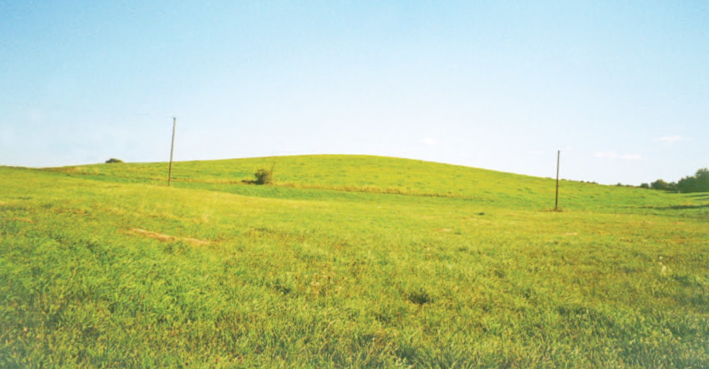

Piliakalnis yra 310 m į šiaurės vakarus nuo Drakicko kalno. Jis įrengtas atskiroje kalvoje, juosiamoje žemesnių pievų. Aikštelė ovali, pailga šiaurės vakarų – pietryčių kryptimi, 25x17 m dydžio. Šiauriniame šlaite, 1,5 m žemiau yra natūrali 35 m pločio terasa, pietvakariniame šlaite, 1,5 m nuo viršaus yra 10 m pločio terasa. Šlaitai nuolaidūs, 8 m aukščio. Piliakalnį labai sužalojo arimai, melioracija. Dabar jis dirvonuoja.